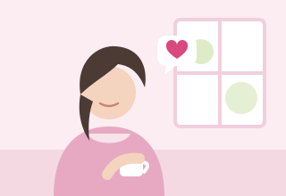
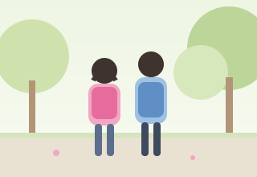
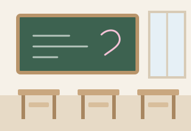

実施中2021年度〜
女性の相談支援と、生理用品の提供
コロナ禍で見えた「生理の貧困」を議会で取り上げました。市の「つながりサポート女性支援事業」として、相談支援や生理用品の提供、小中学校の保健室への配置拡充が始まっています。
事業：宇都宮市（女性相談所・NPO等と連携）／市の資料（PDF）

Policy ― あなたに関係するテーマから、どうぞ。
Healthy City
ヘルシーシティ
「仕事や家事に追われて、自分の体はいつも後回し」
住んでいるだけで元気になれるまちづくりと、女性の健康や身近な医療を支えます。
詳しく見るKids First
キッズファースト
「子どもが学校に行けなくなった。どこに相談すれば？」
学校に行けないときも、安心できる居場所がある。不登校・いじめ・性被害から子どもを守ります。
詳しく見るInclusive City
インクルーシブシティ
「親の介護と子育てが重なって、もう一人では限界」
子育てや介護を一人で抱え込まない。どこに相談しても断られない窓口と、支え合う地域をつくります。
詳しく見るWorks ― 何を提案し、どこまで進んだのか

実施中2021年度〜
コロナ禍で見えた「生理の貧困」を議会で取り上げました。市の「つながりサポート女性支援事業」として、相談支援や生理用品の提供、小中学校の保健室への配置拡充が始まっています。
事業：宇都宮市（女性相談所・NPO等と連携）／市の資料（PDF）

実施中2022年〜
お金だけでなく「頼れる人がいない」という孤立の問題を議会で提言。「親と子どもの居場所支援事業」がモデル事業から本格実施へ進みました。
事業：宇都宮市／出典：福田ちえ市政だより（2022年1月号）

提案中2018年〜継続
不登校を繰り返し議会で取り上げてきました。2026年6月には、幼児期からの人権教育・包括的性教育を推進し「宇都宮版 包括的性教育の手引」をつくるよう求めています。
出典：宇都宮市議会 一般質問（2026年6月18日ほか）
2015年6月〜2026年6月の本会議質問19回の大項目数
2007年初当選、2015年に再当選。現在5期目
2016年12月〜2026年9月の開催回数
Profile ― 西原で育ち、地域とともに。
福田 智恵ふくだ ちえ／1965年 宇都宮市生まれ
宇都宮工業高校、日本工業大学を経てシステム会社に勤務。3人の娘を育てながら、学童保育の保護者会長、西原小PTA会長を務め、2007年に市議会へ。介護施設の施設長も経験し、2015年から再び市議会で活動しています。
プロフィール・年表を見るNews
最終更新：2026年10月26日

Chie no Wa
Contact ― ご意見・ご相談をお聞かせください。
福田ちえ事務所 〒320-0841 宇都宮市六道町12-38